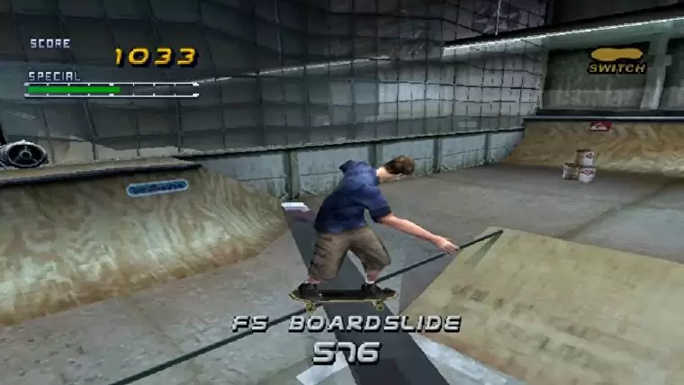
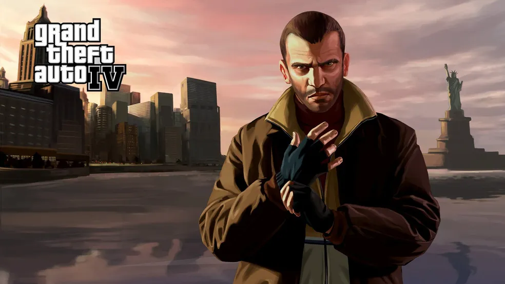

The Legend of Zelda: Ocarina of Time foi lançado originalmente para o Nintendo 64 em 1998 e, posteriormente, também ganhou versões para o Nintendo DS e Nintendo Switch (via Virtual Console). Desde o seu lançamento, a primeira aventura 3D de Link foi um grande sucesso e mostrou muito do que o Nintendo 64 tinha para oferecer.

Tony Hawk's Pro Skater 2 foi desenvolvido pela Neversoft e publicado pela Activision no PlayStation (PS1) em 2000, com ports para PC, Game Boy Color, Dreamcast, Mac, Game Boy Advance, Nintendo 64, iPhone (iOS) e Xbox (incluído na coleção Tony Hawk's Pro Skater 2x). O simulador de skate aprimorou a fórmula do primeiro Tony Hawk's Pro Skater, trazendo novas manobras, pistas e mais possibilidades de customização.
Desenvolvido e publicado pela Rockstar, Grand Theft Auto IV foi lançado para PlayStation 3 (PS3), Xbox 360 e PC em 2008. Protagonizado por Niko Bellic, GTA 4 marcou por trazer para a série um tom mais realista e um mundo mais detalhado, baseado em Nova Iorque.
